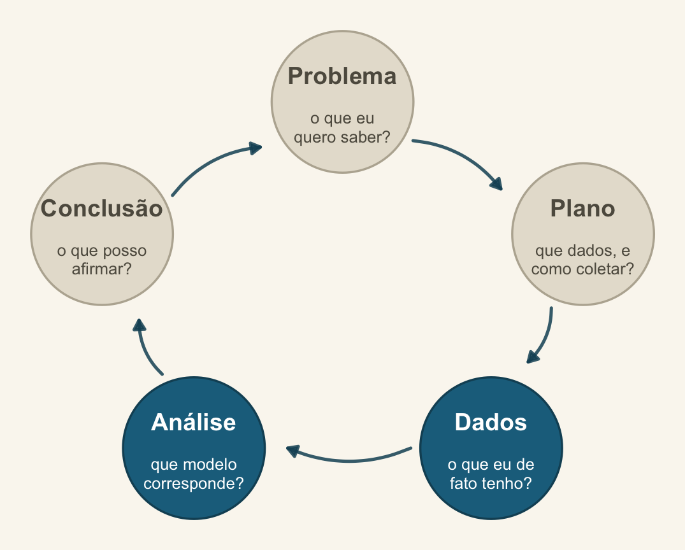
Encontro 4 · Análise de Dados Univariados · PPGBA/UFMS
22 de setembro de 2026

A ponte entre Dados e Análise: a distribuição que escolhemos é uma afirmação sobre o processo que gerou os dados, não sobre a tabela que temos.
Que processo plausivelmente gerou a minha variável resposta?
Até agora assumimos sempre o mesmo: ruído gaussiano em torno de uma média. Essa suposição é razoável para algumas medidas e absurda para outras.
Hoje construímos o vocabulário para fazer escolhas melhores — e a ponte para o GLM, que começa amanhã.
Contagens de Raillietiella mottae (Pentastomida) em 195 lagartos de duas espécies, com comprimento rostro-cloacal.
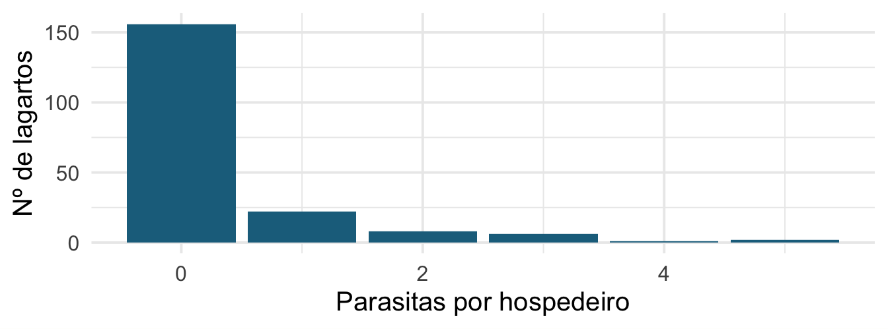
Em grupos: a espécie difere na carga parasitária? Que análise? E o que incomoda vocês nesse histograma?
Discreta — conta coisas. Assume valores isolados: 0, 1, 2, … Tem função de massa: \(P(Y = y)\) é um número que faz sentido.
Contínua — mede coisas. \(P(Y = 3{,}2)\) é zero; o que faz sentido é \(P(3{,}1 < Y < 3{,}3)\). Tem função de densidade.
Isso não é preciosismo: define que distribuições estão disponíveis.
Não os seus dados. O processo que você supõe ter gerado os dados.
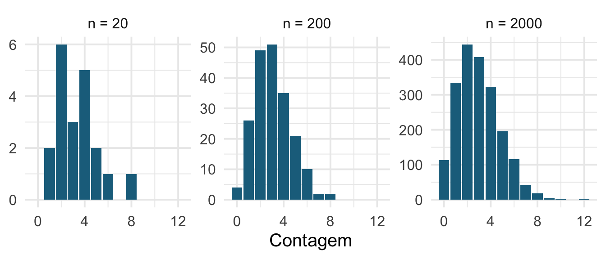
Três amostras do mesmo processo Poisson com média 3. A amostra pequena não “parece” Poisson — e ainda assim é.
| Sua resposta é… | Distribuição | Parâmetros |
|---|---|---|
| medida contínua, simétrica | Normal | \(\mu\), \(\sigma\) |
| medida contínua positiva, assimétrica (massa, tempo) | Gamma, log-normal | forma, taxa |
| sucesso/fracasso | Bernoulli | \(p\) |
| \(k\) sucessos em \(n\) tentativas | Binomial | \(n\), \(p\) |
| contagem sem teto | Poisson | \(\lambda\) |
| contagem sem teto, mais dispersa | Binomial negativa | \(\mu\), \(\theta\) |
| proporção contínua entre 0 e 1 (cobertura, %) | Beta | \(\alpha\), \(\beta\) |
tibble(x = seq(-4, 12, .05)) |>
mutate(`σ = 1` = dnorm(x, 4, 1), `σ = 2` = dnorm(x, 4, 2),
`σ = 3` = dnorm(x, 4, 3)) |>
pivot_longer(-x) |>
ggplot(aes(x, value, colour = name)) +
geom_line(linewidth = 1) +
scale_colour_manual(values = c("#1c6e8c", "#96661f", "#4f7057")) +
labs(x = NULL, y = "Densidade", colour = NULL)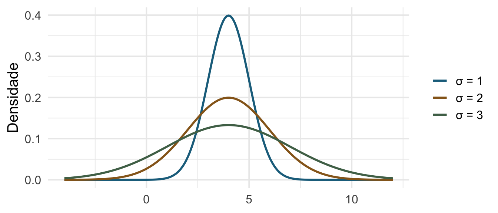
Média e variância são parâmetros independentes. Guardem isso: é a exceção, não a regra.
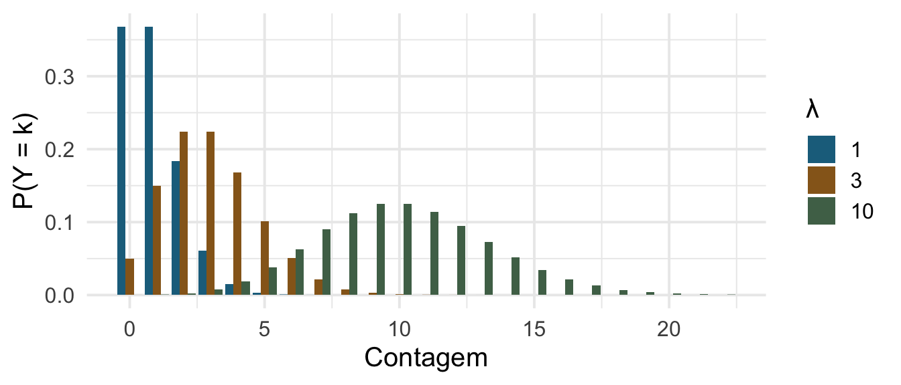
Um parâmetro só: \(\mathrm{E}[Y] = \mathrm{Var}[Y] = \lambda\). A variância não é livre — é igual à média por construção.
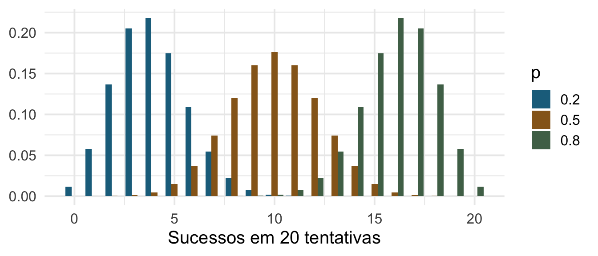
Nos dados de UV: Eosinophil sucessos em Total_Cell = 100 células.
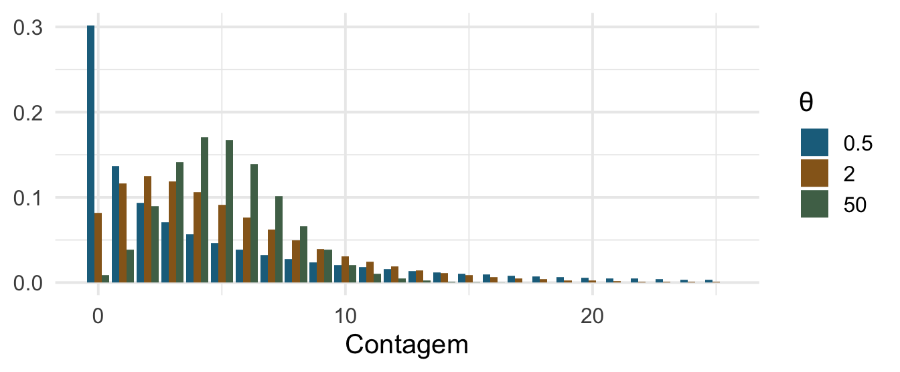
Mesma média (5), dispersões diferentes. Com \(\theta \to \infty\) ela converge para a Poisson. É a Poisson com uma válvula de escape.
tibble(x = seq(0.01, 20, .05)) |>
mutate(`forma 1` = dgamma(x, 1, .3), `forma 3` = dgamma(x, 3, .6),
`forma 9` = dgamma(x, 9, 1.2)) |>
pivot_longer(-x) |>
ggplot(aes(x, value, colour = name)) +
geom_line(linewidth = 1) +
scale_colour_manual(values = c("#1c6e8c", "#96661f", "#4f7057")) +
labs(x = NULL, y = "Densidade", colour = NULL)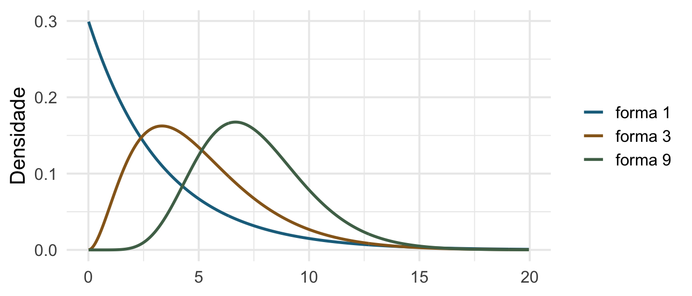
Estritamente positiva e assimétrica: biomassa, tempo até um evento, concentração. Quase sempre melhor do que “log-transformar e usar Normal”.
| Distribuição | Variância |
|---|---|
| Normal | \(\sigma^2\) — livre |
| Poisson | \(\mu\) |
| Binomial | \(n p (1-p)\) |
| Binomial negativa | \(\mu + \mu^2/\theta\) |
| Gamma | \(\mu^2 / \text{forma}\) |
Em quase toda distribuição que não seja a Normal, a variância é função da média. Por isso a heterocedasticidade que vimos no Encontro 1 muitas vezes não é um defeito a corrigir: é o processo dizendo qual distribuição usar.
penta |>
mutate(classe = cut(CRC, breaks = 6)) |>
group_by(classe) |>
summarise(media = mean(Raillietiella_mottae),
variancia = var(Raillietiella_mottae), n = n()) |>
ggplot(aes(media, variancia)) +
geom_point(size = 3, colour = "#1c6e8c") +
geom_abline(slope = 1, intercept = 0, colour = "#96661f", linetype = 2) +
labs(x = "Média da classe", y = "Variância da classe")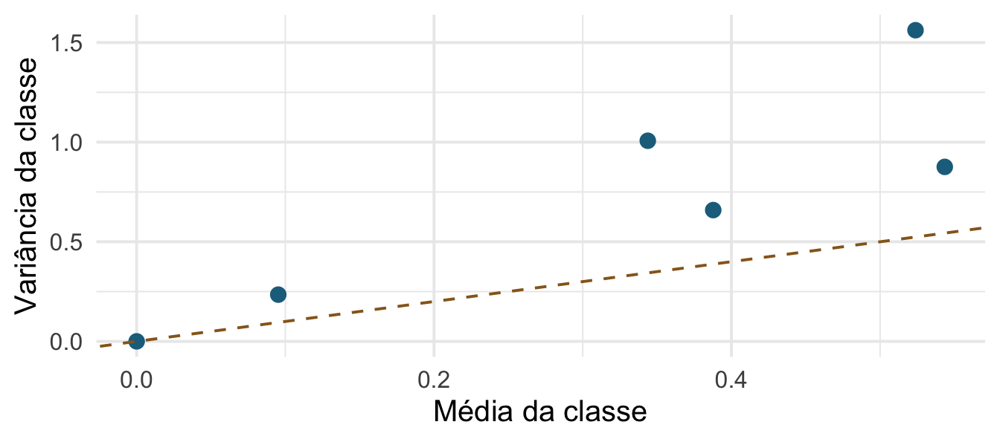
A linha tracejada é variância = média (Poisson). Os pontos estão acima dela: sobredispersão. Amanhã à tarde tratamos disso.
set.seed(2026)
obs <- penta$Raillietiella_mottae
bind_rows(
tibble(valor = obs, fonte = "Observado"),
tibble(valor = rpois(length(obs), mean(obs)), fonte = "Simulado: Poisson"),
tibble(valor = rnbinom(length(obs), mu = mean(obs), size = .3),
fonte = "Simulado: Binomial negativa")
) |>
ggplot(aes(valor)) + geom_bar(fill = "#1c6e8c") +
facet_wrap(~fonte) + coord_cartesian(xlim = c(0, 8)) +
labs(x = NULL, y = NULL)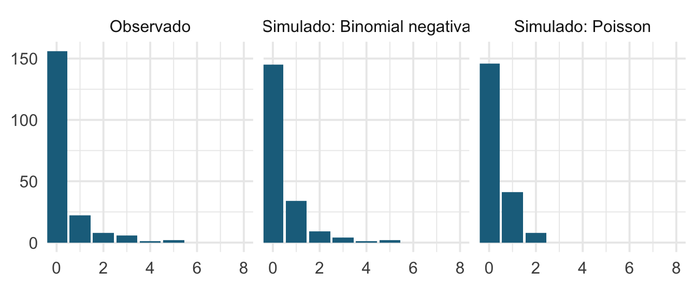
O mesmo truque do Encontro 2: simule sob cada hipótese e veja qual se parece com o que você tem.
15 minutos.
Na volta: a família exponencial.
Normal, Poisson, Binomial, Gamma, binomial negativa (com \(\theta\) fixo) e Beta podem ser escritas na mesma forma geral:
\[ f(y \mid \theta, \phi) = \exp\!\left\{ \frac{y\theta - b(\theta)}{a(\phi)} + c(y, \phi) \right\} \]
Não é preciso decorar. O que importa é a consequência: como todas compartilham essa estrutura, um único algoritmo ajusta todas — o mesmo glm(), com um argumento family diferente.
O parentesco entre as distribuições é mais fácil de ver mexendo do que lendo. Duas que valem a hora:
Probability Playground — 33 distribuições com gráficos interativos: você arrasta os parâmetros e vê a forma mudar. É o jeito mais rápido de sentir por que a binomial negativa vira Poisson quando a dispersão some, ou a Poisson vira normal quando \(\lambda\) cresce.
Univariate Distribution Relationships — o mapa completo: 76 distribuições e as setas que as ligam, tudo clicável. Cada seta é uma relação com nome (limite, transformação, caso especial).
Um exercício de cinco minutos que rende: no mapa, encontrem as quatro famílias que vimos hoje e sigam as setas entre elas. As que o curso usa não são um punhado de escolhas soltas — são vizinhas no mapa.
O modelo linear gaussiano é o caso em que a família é Normal e a ligação é a identidade. Vocês já sabem GLM; só tinham visto um caso dele.
O preditor linear \(\mathbf{X}\boldsymbol{\beta}\) varia de \(-\infty\) a \(+\infty\). Mas:
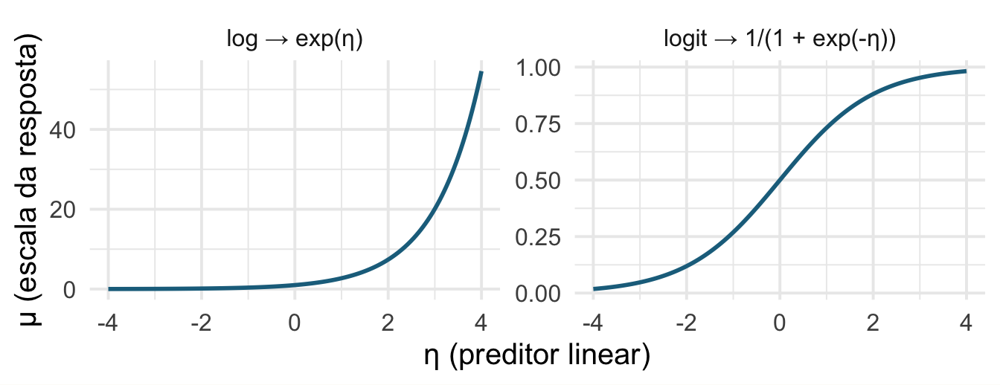
| Família | Ligação | \(g(\mu)\) | Inversa |
|---|---|---|---|
| Normal | identidade | \(\mu\) | \(\eta\) |
| Poisson | log | \(\log \mu\) | \(e^{\eta}\) |
| Binomial | logit | \(\log\frac{\mu}{1-\mu}\) | \(\frac{1}{1+e^{-\eta}}\) |
| Gamma | inversa | \(1/\mu\) | \(1/\eta\) |
“Canônica” significa que ela cai naturalmente da álgebra da família. Nada impede usar outra — binomial(link = "probit"), por exemplo — mas a canônica costuma ter as melhores propriedades numéricas.
lm(log(y) ~ x) modela a média do log de \(y\).
glm(y ~ x, family = poisson(link = "log")) modela o log da média de \(y\).
São coisas diferentes, e a diferença importa.
log(0) é indefinido; some 0,5 e você inventou dado.Isto vale sobretudo para contagens e proporções. Para medidas contínuas positivas, transformar às vezes é razoável — mas a Gamma normalmente é melhor.
No Encontro 2 as duas apareceram sobre os pinguins. Nos lagartos:
pearson spearman
0.2291663 0.1827049 Pearson mede associação linear; Spearman é Pearson nos postos e mede associação monotônica. Divergência grande entre as duas é sinal para olhar o gráfico — não para escolher a maior.
Correlação é uma estatística descritiva de duas variáveis. Ela não controla nada, não prediz nada e não acomoda covariáveis. Quando a pergunta tem direção, ou mais de uma preditora, você quer um modelo — que é o assunto do curso inteiro.
glm(..., family =).Leitura: Análises Ecológicas no R, cap. 8 (https://analises-ecologicas.com/cap8), seções “Como um GLM funciona?” e “Como escolher a distribuição correta para seus dados?”.
Amanhã de manhã: o GLM propriamente dito — verossimilhança, logística e Poisson.
Análise de Dados Univariados · PPGBA/UFMS · 2026/2